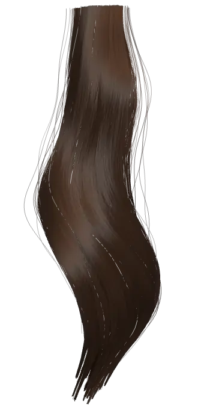
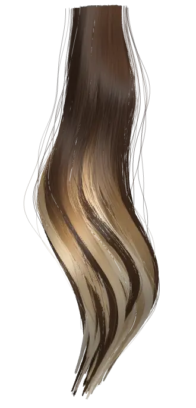
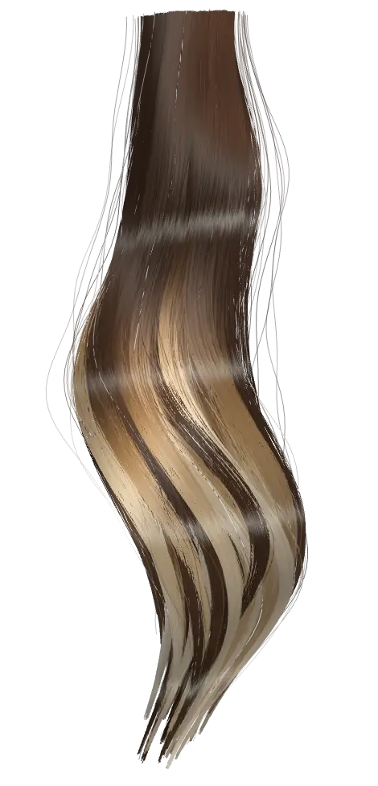
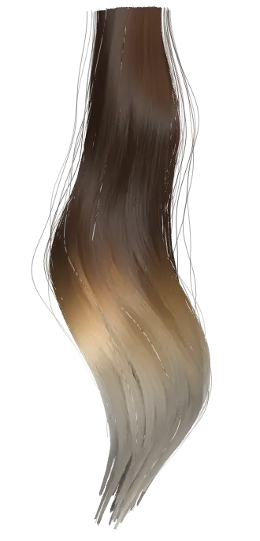
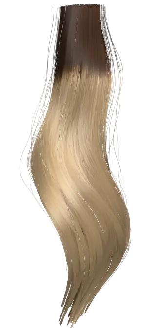
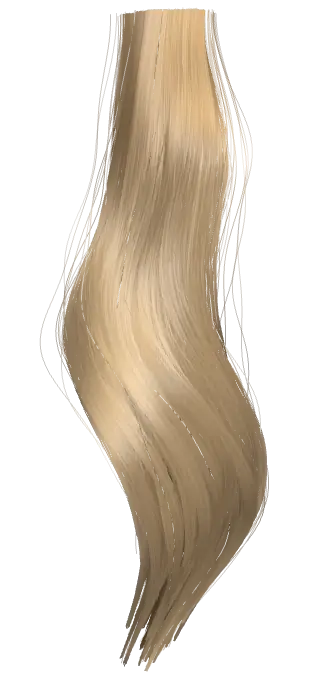
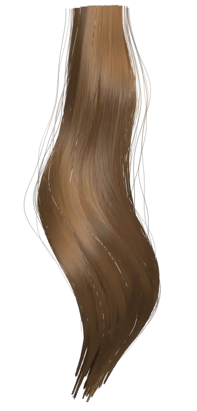
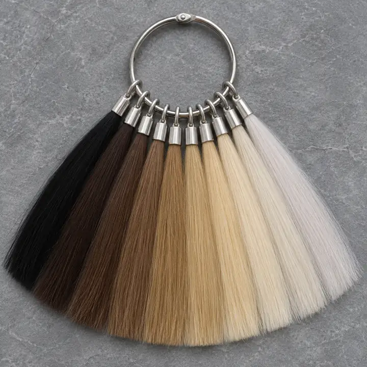
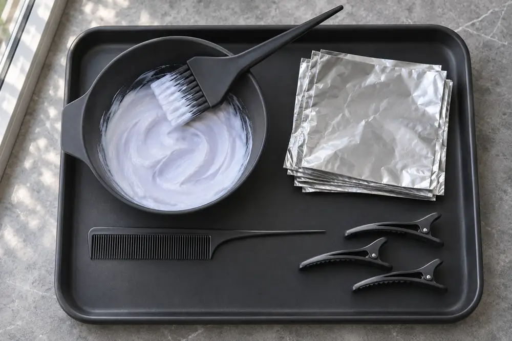
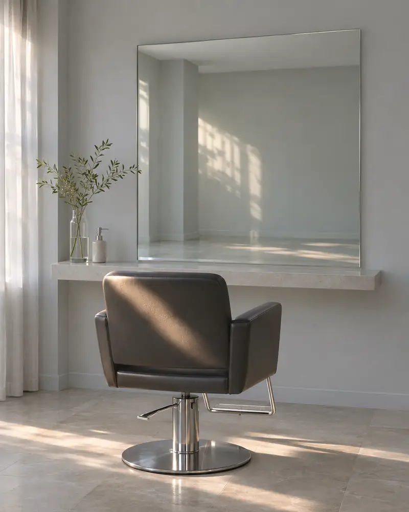

Балаяж
Світлі пасма розфарбовують вручну, мазками, без чіткої межі. Корінь лишається своїм.
- триває3–5 год
- до підборіддявід 4 500 ₴
- до поясавід 7 000 ₴

Студія фарбування волосся
Оберіть техніку — ціну покаже пасмо. Точну суму назвуть за двома фото.
Балаяж · усі довжини 4 500 – 7 000 ₴
П’ять технік
Скільки триває і скільки коштує на найкоротшу й найдовшу довжину. Гортайте вбік.


Світлі пасма розфарбовують вручну, мазками, без чіткої межі. Корінь лишається своїм.

Перехід по всій ширині: темніший корінь, світліші кінці, межу розтягнуто вздовж довжини.


Фарба лише на відрослу частину біля шкіри. Довжину не чіпають, тому ціна від неї не залежить.

Один колір від кореня до кінців.
Змінює відтінок, а не рівень: той самий блонд стає холоднішим або теплішим.
Омбре й балаяж у київських прайсах зазвичай стоять одним рядком — тому й ціна однакова.
Усі ціни й тривалості умовні: медіани публічних прайсів київських салонів, листопад 2026. Пасма намальовані кодом — це схема техніки, а не фото роботи.

Довжина
Гортайте вздовж пасма або торкніться позначки — ціни всіх п’яти технік стануть у цей рядок.
до 15 см
Ціни «від», умовні. Корені не залежать від довжини.
15–25 см
Ціни «від», умовні. Корені не залежать від довжини.
25–35 см
Ціни «від», умовні. Корені не залежать від довжини.
від 45 см
Ціни «від», умовні. Корені не залежать від довжини.
Між лопатками й поясом (35–45 см) ціну скаже колористка за фото.
Кадри намальовані кодом — це зразки, а не фото клієнтки.
Фото замість здогадок
Довжина — половина ціни. Друга половина — що з волоссям зараз: чи фарбувалось, наскільки світлі кінці. Це видно на двох фото при денному світлі.
Приклад сценарію бота · без імен
Хочу балаяж. Два фото при денному світлі.
Фарбувались за останні 6 місяців?
Так, у темний.
До куди довжина?
До лопаток.
КолористкаБалаяж на вашу довжину — 6 150–7 000 ₴. Точну суму назву на консультації перед фарбуванням.

Між візитами
Волосся відростає приблизно на 1,2 см за місяць. За 8 тижнів біля шкіри — близько 2,3 см нового кольору.
Джерело: American Academy of Dermatology (за L’Oréal Paris, 2021).
Його найчастіше оновлюють кожні 4–8 тижнів: залежить від того, як часто ви миєте голову і як швидко вимивається відтінок.
Джерело: Wella Professionals, 22.06.2026.
Запис · рівень 10.1
На справжньому сайті заявка може йти в Telegram-бот салону й у таблицю записів; що саме підключати, фіксуємо в пропозиції. Тут — демо: нічого нікуди не надсилається.
10.1 — платиновий попелястий: цифра до крапки в коді тону — рівень, після крапки — відтінок.

Балаяж · усі довжини4 500 – 7 000 ₴
На справжньому сайті два фото й відповіді може отримати Telegram-бот салону, а колористка відповість діапазоном ціни.
Балаяж · усі довжинифарбувались: так
Хочу такий сайт для свого салону